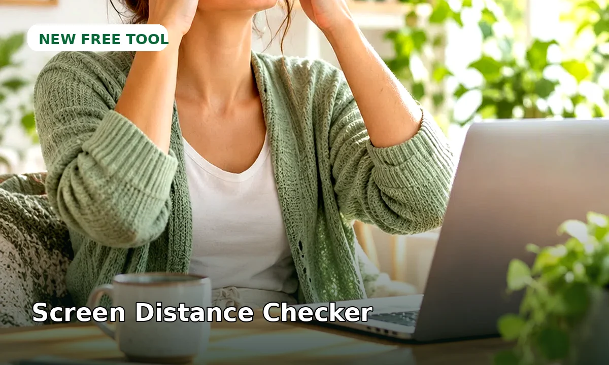

FREE DAILY TOOL
Screen Distance Checker
A simple ergonomic guide for screen distance and eye comfort.
Educational planning tool only. It does not diagnose or replace personalized medical advice.

A simple ergonomic guide for screen distance and eye comfort.
